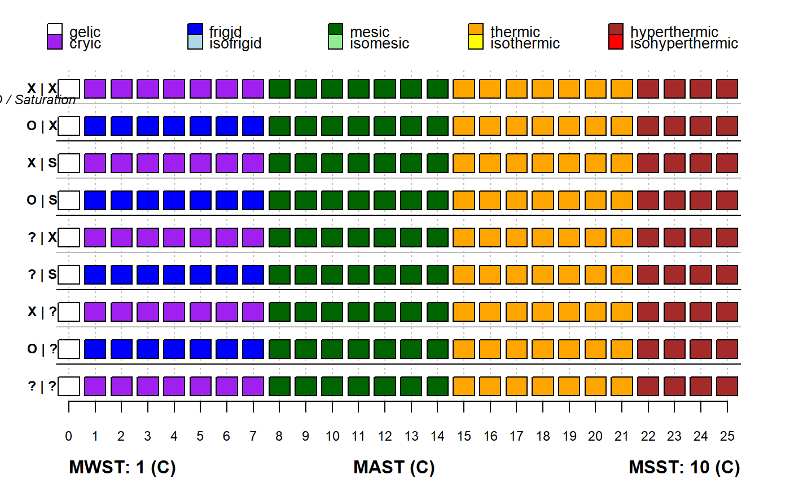

STRplot.RdGraphical Description of US Soil Taxonomy Soil Temperature Regimes
STRplot(mast, msst, mwst, permafrost = FALSE, pt.cex = 2.75, leg.cex = 0.85)
| mast | single value or vector of mean annual soil temperature (deg C) |
|---|---|
| msst | single value or vector of mean summer soil temperature (deg C) |
| mwst | single value of mean winter soil temperature (deg C) |
| permafrost | logical: permafrost presence / absense |
| pt.cex | symbol size |
| leg.cex | legend size |
Soil Survey Staff. 2015. Illustrated guide to soil taxonomy. U.S. Department of Agriculture, Natural Resources Conservation Service, National Soil Survey Center, Lincoln, Nebraska.
